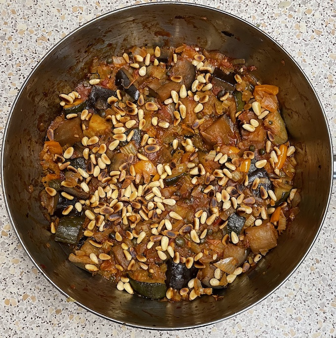

Caponata
Aubergine & courgette
- Fry or roast at 200°C till brown on all sides
- 2-3 tbsp olive oil
- 2 medium aubergines diced in 2cm pieces
- 1 courgette chopped
Stew
- Chop onions and celery together in ninja
- Fry for 10-15 mins till celery soft
- 3 tbsp olive oil
- 2 peppers chopped
- 3 medium onions chopped
- 5 sticks celery chopped
- Add for 2 mins
- 6 cloves garlic
- 1 chilli
- Add and simmer for 30 mins with lid off
- 1 tin tomatoes
- 75g capers rinsed
- 100g black olives rinsed, quartered
- aubergine & courgette
- Add and simmer for 15 mins with lid off
- 25g dark brown Muscavado sugar
- ¼ tsp fish sauce
- ¼ tsp chilli flakes (if no fresh chilli)
- Add
- 40ml red wine vinegar
- 50g pine nuts toasted
- ¼ tsp salt (taste as olives may add enough)
- black pepper
Serving
Notes
